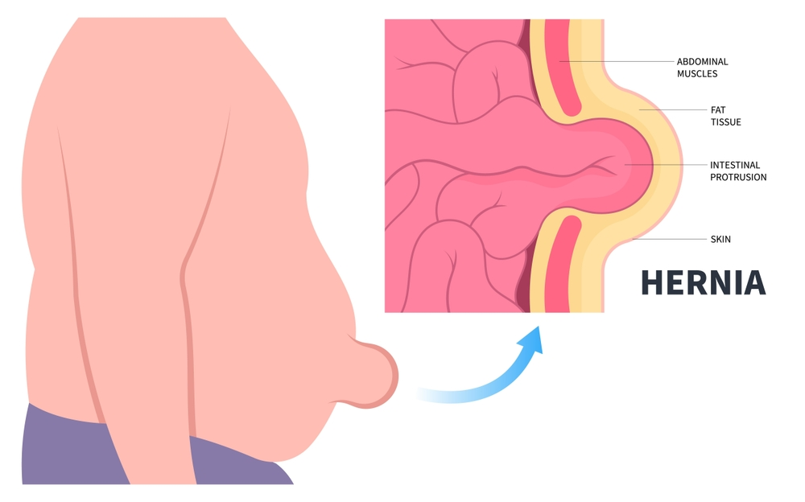
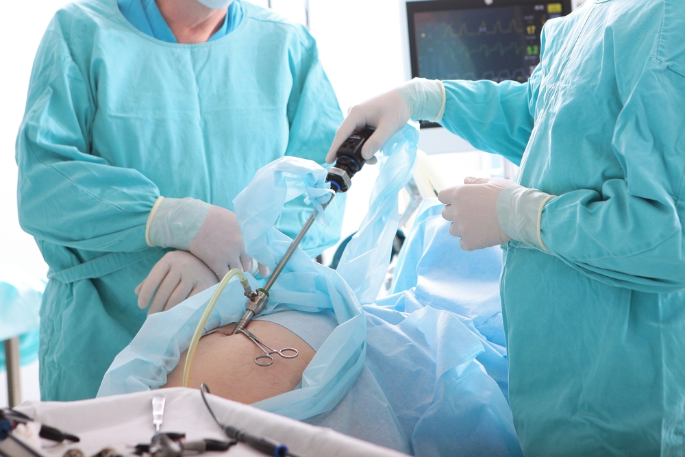

Hernias are more common than many people realize, and while some may seem harmless at first, leaving them untreated can lead to serious consequences. A hernia occurs when an internal organ or tissue pushes through a weak spot in the surrounding muscle or connective tissue. In the early stages, symptoms may be mild or even unnoticeable, which leads many individuals to delay seeking treatment. But what happens if a hernia is left untreated? The answer isn’t simple, and it’s often more serious than you might expect.
Ignoring a hernia can lead to severe health risks, including chronic pain, bowel obstruction, or even life-threatening complications like strangulation. This blog will guide you through the basics of hernias, their causes, early symptoms, and, most importantly, what can go wrong if you choose to delay treatment. If you suspect you have a hernia, it’s essential to act quickly and consult a qualified hernia surgeon in Delhi for timely evaluation and care.
Understanding Hernia
A hernia is a medical condition that occurs when an organ, such as part of the intestine, pushes through a weak spot or opening in the muscle or tissue that usually holds it in place. The most common types include inguinal (groin), umbilical (belly button), hiatal (upper stomach), and incisional (through a scar). Hernias can occur in both men and women, and while some are present at birth, others develop over time due to physical strain or weakness in the abdominal wall.
Initially, a hernia might appear as a soft bulge under the skin, especially when coughing, lifting, or standing. It may be painless at first and often retracts when lying down. However, just because it doesn’t hurt doesn’t mean it should be ignored. Understanding what happens if a hernia is left untreated is critical because even a small, seemingly harmless hernia can worsen and lead to complications over time.
Causes of Hernia

Hernias occur when internal organs or tissues push through weak spots in muscle or connective tissue, often in the abdominal wall. Several underlying factors can contribute to this weakness or increase the pressure inside the abdomen, making hernia formation more likely.
Common causes include:
- Heavy Lifting: Straining while lifting heavy objects, especially without proper core support, is one of the leading causes of hernias.
- Chronic Coughing or Sneezing: Conditions such as asthma, chronic bronchitis, or seasonal allergies can increase pressure in the abdomen over time.
- Straining During Bowel Movements: Chronic constipation forces abdominal muscles to push harder, weakening them gradually.
- Obesity: Excess weight increases intra-abdominal pressure, putting constant strain on the muscles.
- Pregnancy: The growing uterus stretches and weakens the abdominal wall.
- Aging: Muscle tissue naturally loses strength and elasticity with age.
- Previous Surgery: Surgical incisions can leave weakened tissue behind, leading to incisional hernias.
- Genetic Factors: Some people are born with weaker connective tissues, making them more susceptible.
Early Symptoms of a Hernia
Many hernias begin with mild, almost unnoticeable symptoms, which is why they’re often overlooked. However, identifying these signs early gives you the best chance to avoid complications and prevent the condition from worsening.
Typical early symptoms include:
- Visible Bulge or Lump: Often appearing in the groin, navel, or surgical scar area, the bulge may grow more prominent when standing, coughing, or lifting.
- Discomfort or Mild Pain: A dull ache or sharp twinge may be felt, especially during physical activity or prolonged standing.
- Heaviness or Pressure: Many patients describe a dragging sensation in the abdomen or groin, especially toward the end of the day.
- Intermittent Swelling: The hernia might retract when lying down and reappear when upright or under strain.
- Digestive Disruption: In some cases, early hernias may cause bloating, constipation, or mild nausea.
Ignoring these signs can be dangerous. Even if symptoms are manageable now, they can evolve into more severe problems. Knowing what happens if a hernia is left untreated—like increased pain, bowel obstruction, or strangulation—should motivate timely action.
Serious Complications of Untreated Hernias
While a hernia may start as a small, painless bulge, it has the potential to turn into a medical emergency if left untreated. These complications don’t just cause discomfort—they can be life-threatening. Understanding if a hernia is left untreated helps emphasize why timely intervention is not optional but necessary.
The most serious complications include
1. Incarcerated Hernia
An incarcerated hernia occurs when the protruding tissue becomes trapped in the abdominal wall and can no longer be pushed back in. This cuts off natural movement and blood flow to the tissue. It can cause intense, ongoing pain, constipation, nausea, and swelling. Without medical treatment, this can quickly progress to strangulation.
2. Strangulated Hernia
This is the most dangerous outcome of an untreated hernia. When blood flow to the incarcerated tissue is cut off, the tissue begins to die. This can result in gangrene, sepsis, and multi-organ failure. Strangulated hernias are surgical emergencies that require immediate intervention. Symptoms include sharp, unrelenting pain, fever, vomiting, and discoloration over the bulge.
3. Bowel Obstruction
A large hernia may push into or compress parts of the intestines, leading to partial or complete blockage. This causes severe bloating, cramping, nausea, vomiting, and the inability to pass gas or stool. If not resolved, it can result in bowel perforation or rupture.
Long-Term Risks of Avoiding Treatment

Beyond immediate emergencies, untreated hernias bring about long-term health consequences that can gradually wear down your quality of life. Over time, the hernia continues to grow, placing greater strain on your abdominal wall and internal organs.
Here are the long-term risks of avoiding hernia treatment:
1. Chronic Pain and Ongoing Discomfort
As the hernia enlarges, you may feel constant pressure or pain, particularly during daily activities like walking, bending, or lifting. What starts as mild discomfort can become debilitating over months or years.
2. Loss of Mobility and Physical Activity
Avoiding movement out of fear of making the hernia worse can lead to a sedentary lifestyle. This increases the risk of weight gain, muscle loss, and joint stiffness, leading to a decline in overall fitness and health.
3. Digestive Disorders
Pressure on the intestines may cause irregular bowel movements, bloating, acid reflux, or persistent nausea. In hiatal hernias, stomach contents can move into the esophagus, triggering heartburn and respiratory issues.
4. Increased Surgical Risk Later
The longer you wait, the more likely the hernia will become incarcerated or strangulated. Emergency hernia repairs carry a higher risk of complications, longer hospital stays, and slower recovery compared to elective surgeries.
5. Mental and Emotional Stress
Living with an untreated hernia can affect your mental well-being. Anxiety about physical limitations or fear of emergencies can create chronic stress and reduce your sense of confidence and control.
The Dangers of Ignoring Hernia
Ignoring a hernia might seem harmless at first—especially if it’s not causing pain—but doing so can lead to serious consequences. The condition doesn’t go away on its own and typically worsens with time. Understanding what happens if a hernia is left untreated can help you make an informed decision about your health.
Key dangers of leaving a Hernia untreated:
- Hernia Enlargement: The bulge usually grows larger over time, increasing discomfort and pressure on surrounding tissues.
- Chronic Pain: What starts as mild discomfort can turn into persistent, sharp pain during daily activities like walking, bending, or lifting.
- Incarceration: The herniated tissue can become trapped (incarcerated), cutting off movement and blood flow.
- Strangulation: Blood supply to the trapped tissue may be lost, leading to tissue death—this is a medical emergency that requires immediate surgery.
- Bowel Obstruction: Hernias involving the intestines can block digestion, causing severe pain, vomiting, and bloating.
- Emergency Surgery: Delaying treatment often results in a rushed, higher-risk surgical procedure with longer recovery times.
- Higher Complication Rates: The longer a hernia is ignored, the more complex the surgery becomes, increasing the chances of complications during and after the procedure.
Early evaluation by a hernia surgeon can help you avoid these risks and opt for a safer, planned repair instead of a life-threatening emergency.
Key Benefits of Early Hernia Treatment:
- Minimally invasive procedure options
- Shorter and easier recovery
- Lower risk of emergency complications
- Reduced long-term pain and discomfort
- Better overall surgical outcomes
Expert Hernia Surgery by Dr. Atul Peters!
Contact Now!
Book Your Appointment
Conclusion
A hernia may seem harmless at first—just a small bulge or mild discomfort—but it’s a medical condition that should never be ignored. Over time, that “small issue” can become a major health threat. From persistent pain and digestive issues to emergency complications like strangulation or bowel obstruction, the risks are real and serious. Now that you understand what happens if a hernia is left untreated, it’s clear that delaying care only increases danger and complexity.
The good news is that hernias are treatable, especially when caught early. Elective surgery is typically safe, quick, and offers excellent outcomes, especially when performed by a qualified professional like Dr. Atul Peters. Early treatment minimizes recovery time, reduces the risk of complications, and helps you return to a normal, active life without fear.
Frequently Asked Questions
How long can you live with an Untreated Hernia?
Can a Hernia grow back?
Are Hernias painful?
Can a Hernia be cancerous?
How can I shrink my Hernia naturally?
Recommended Further Reading
Have Personal Health Questions?
Consult with Dr. Atul Peters and our expert multidisciplinary team at Max Smart Super Speciality Hospital, Saket, New Delhi.
Book Your Consultation